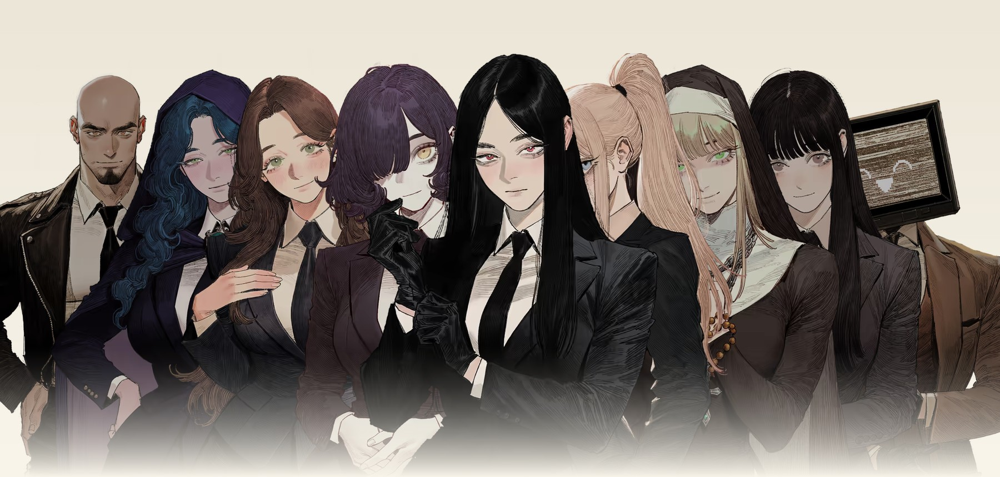
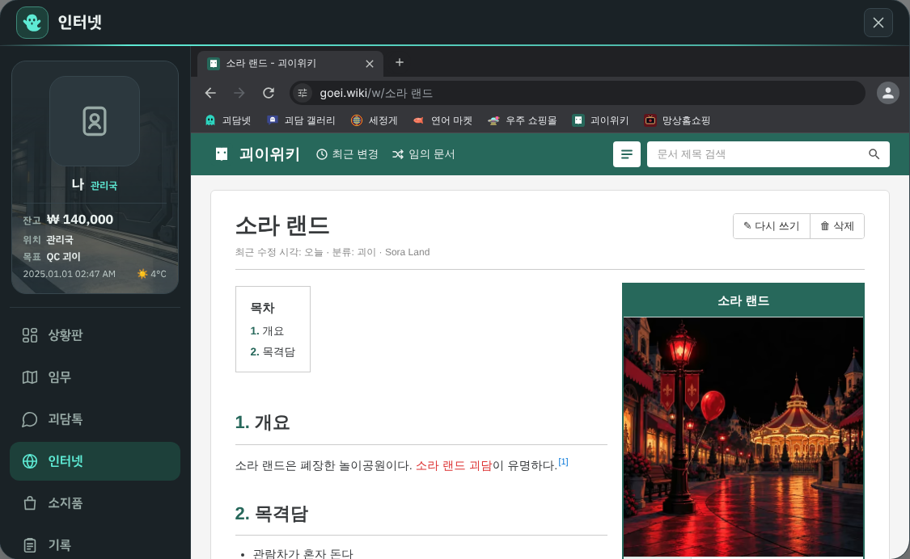

<div style="max-width:900px;margin:0 auto;padding:12px;background:linear-gradient(135deg,#d9cfb8,#cdbf9f);border:1px solid #b7a67f;color:#1d2740;background-color:rgba(0,0,0,0.004);font-family:'Pretendard','Noto Sans KR','Apple SD Gothic Neo','Malgun Gothic',sans-serif;">
<div style="background:linear-gradient(170deg,#fffdf6,#f6efdc);border:1px solid #cdbf9f;box-shadow:0 8px 20px rgba(60,40,10,0.25);">
<div style="display:table;width:100%;border-bottom:2px solid #1d2740;">
<div style="display:table-cell;vertical-align:middle;padding:14px 18px;font-family:'Consolas','Monaco','Courier New',monospace;font-size:11px;letter-spacing:3px;color:#4a5368;background-color:rgba(0,0,0,0.004);">FILE No. A00-0001 · 신입 요원 배부용</div>
<div style="display:table-cell;vertical-align:middle;padding:14px 18px;text-align:right;"><span style="display:inline-block;padding:4px 10px;border:2px solid #c0392b;color:#c0392b;background-color:rgba(0,0,0,0.004);font-size:11px;font-weight:900;letter-spacing:3px;">대외비</span></div>
</div>
<div style="padding:34px 22px 26px;text-align:center;">
<div style="font-size:12px;letter-spacing:5px;color:#c0392b;background-color:rgba(0,0,0,0.004);font-weight:800;">ANOMALY SIMULATION</div>
<div style="font-family:'Noto Serif KR','Nanum Myeongjo','AppleMyungjo','Batang',serif;font-size:52px;line-height:1.2;font-weight:900;color:#1d2740;background-color:rgba(0,0,0,0.004);margin-top:10px;">괴이 ː ANOMALY</div>
<div style="font-family:'Noto Serif KR','Nanum Myeongjo','AppleMyungjo','Batang',serif;font-size:20px;color:#1d2740;background-color:rgba(0,0,0,0.004);margin-top:12px;font-weight:700;">신입 요원 안내서</div>
</div>
<div style="padding:0 22px;"><div style="border:1px solid #1d2740;padding:5px;background:linear-gradient(180deg,#fffdf6,#f3ecd8);"></div>
<div style="font-family:'Consolas','Monaco','Courier New',monospace;font-size:11px;color:#4a5368;background-color:rgba(0,0,0,0.004);text-align:right;margin-top:6px;">첨부 1. 등록 인물 55명 중 일부</div></div>
<div style="padding:34px 22px 10px;">
<div style="display:inline-block;padding:5px 14px;background:linear-gradient(180deg,#1d2740,#263352);"><span style="color:#fffdf6;font-size:12px;font-weight:800;letter-spacing:3px;">제1장</span></div>
<div style="font-family:'Noto Serif KR','Nanum Myeongjo','AppleMyungjo','Batang',serif;font-size:30px;font-weight:900;color:#1d2740;background-color:rgba(0,0,0,0.004);margin-top:10px;border-bottom:1px solid #1d2740;padding-bottom:10px;">소속 선택</div>
<div style="padding:16px 4px;border-bottom:1px dashed #b7a67f;"><div style="font-family:'Consolas','Monaco','Courier New',monospace;font-size:11px;color:#c0392b;background-color:rgba(0,0,0,0.004);letter-spacing:2px;font-weight:800;">A00</div><div style="font-family:'Noto Serif KR','Nanum Myeongjo','AppleMyungjo','Batang',serif;font-size:21px;font-weight:900;color:#1d2740;background-color:rgba(0,0,0,0.004);margin-top:2px;">관리국</div><div style="font-size:14px;line-height:1.75;color:#3a4460;background-color:rgba(0,0,0,0.004);margin-top:5px;">괴이로부터 인류를 지키는 비밀 조직. 소수 정예 초인 요원들이 일상 뒤에 숨어 움직인다.</div></div><div style="padding:16px 4px;border-bottom:1px dashed #b7a67f;"><div style="font-family:'Consolas','Monaco','Courier New',monospace;font-size:11px;color:#c0392b;background-color:rgba(0,0,0,0.004);letter-spacing:2px;font-weight:800;">B00</div><div style="font-family:'Noto Serif KR','Nanum Myeongjo','AppleMyungjo','Batang',serif;font-size:21px;font-weight:900;color:#1d2740;background-color:rgba(0,0,0,0.004);margin-top:2px;">가짜 관리국</div><div style="font-size:14px;line-height:1.75;color:#3a4460;background-color:rgba(0,0,0,0.004);margin-top:5px;">스스로를 진짜 관리국이라 여기는 또 하나의 관리국. 괴이를 이물이라 부르며 체계화된 무력으로 대응한다.</div></div><div style="padding:16px 4px;border-bottom:1px dashed #b7a67f;"><div style="font-family:'Consolas','Monaco','Courier New',monospace;font-size:11px;color:#c0392b;background-color:rgba(0,0,0,0.004);letter-spacing:2px;font-weight:800;">C00</div><div style="font-family:'Noto Serif KR','Nanum Myeongjo','AppleMyungjo','Batang',serif;font-size:21px;font-weight:900;color:#1d2740;background-color:rgba(0,0,0,0.004);margin-top:2px;">백일몽 주식회사</div><div style="font-size:14px;line-height:1.75;color:#3a4460;background-color:rgba(0,0,0,0.004);margin-top:5px;">괴이를 상품으로 만드는 제약 대기업. 겉으로는 제약사, 진짜 상품은 꿈결이다.</div></div>
</div>
<div style="padding:30px 22px 10px;">
<div style="display:inline-block;padding:5px 14px;background:linear-gradient(180deg,#1d2740,#263352);"><span style="color:#fffdf6;font-size:12px;font-weight:800;letter-spacing:3px;">제5장</span></div>
<div style="font-family:'Noto Serif KR','Nanum Myeongjo','AppleMyungjo','Batang',serif;font-size:30px;font-weight:900;color:#1d2740;background-color:rgba(0,0,0,0.004);margin-top:10px;border-bottom:1px solid #1d2740;padding-bottom:10px;">괴이위키</div>
<div style="font-size:14px;line-height:1.75;color:#3a4460;background-color:rgba(0,0,0,0.004);margin-top:10px;">괴이·인물·조직 문서를 그림과 함께 열람, 없는 문서는 그 자리에서 작성 요청</div>
</div>
<div style="padding:8px 22px 36px;"><div style="border:1px solid #1d2740;padding:5px;background:linear-gradient(180deg,#fffdf6,#f3ecd8);box-shadow:4px 5px 0 rgba(29,39,64,0.18);"></div>
<div style="font-family:'Consolas','Monaco','Courier New',monospace;font-size:11px;color:#4a5368;background-color:rgba(0,0,0,0.004);text-align:right;margin-top:6px;">첨부 7. 괴이위키 「소라 랜드」 문서</div></div>
</div></div>